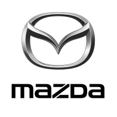

A Mazda é uma montadora japonesa fundada em 1920, originalmente como Toyo Cork Kogyo.
Inicialmente fabricava ferramentas e maquinários, mas passou a produzir veículos na década de 1930. Reconhecida por seu design inovador e desempenho esportivo, a marca se destacou com o uso exclusivo do motor rotativo Wankel em diversos modelos. Com sede em Hiroshima, a Mazda combina tecnologia, eficiência e paixão por dirigir, refletida em seu slogan "Zoom-Zoom".
A empresa busca inovação com foco em sustentabilidade, como a linha de motores Skyactiv e veículos híbridos e elétricos.